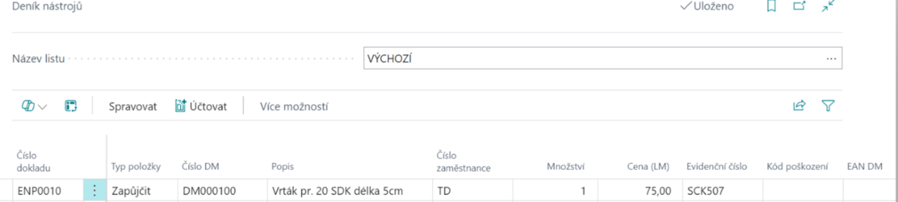
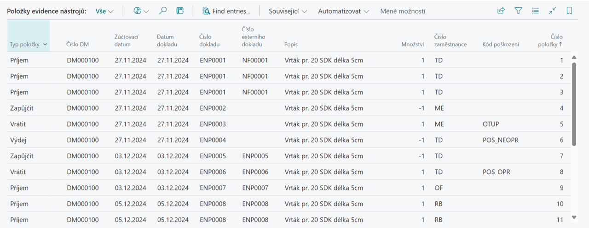

Evidence nástrojů a pomůcek
Aktualizace: 01.12.2024
Získejte plnou kontrolu nad svými nástroji a vybavením díky chytrému řešení, které je přímo integrované do systému Business Central. Sledujte pohyb nástrojů, minimalizujte ztráty a prodlužte jeho životnost díky snadnému přehledu o evidenci, zápůjčkách, kontrolách a údržbě. Náš modul Evidence nástrojů a pomůcek řeší problematiku evidence nástrojů, pomůcek, forem a jiných potřeb, které jsou obvykle evidovány pomocí skladové evidence systému. Tento modul je postaven na základech evidence majetku a sjednocuje evidenci pro potřeby sledování dlouhodobého majetku a výrobní evidence, včetně půjčování nástrojů a pomůcek.

Klíčové funkce modulu
- Příjem nástrojů: Umožňuje snadné zaevidování každého nového nástroje. Získáte přehled o stavu dostupnosti vybavení od samého začátku.
- Zapůjčení nástrojů: Usnadňuje správu zápůjček, ať už jde o krátkodobé, či dlouhodobé využití. Můžete sledovat, kdo má nástroje aktuálně zapůjčené.
- Vrácení nástrojů: Zajišťuje přehled o stavu nářádí při vrácení a umožňuje jeho okamžitou aktualizaci v evidenci.
- Vyřazení nástrojů: Umožňuje snadné vyřazení poškozených nebo zastaralých nástrojů, čímž vzniká místo pro nové vybavení.
Proces používání nástrojů
Používání nástrojů probíhá dle následujícího schématu:

Scénáře použití Evidence nástrojů a pomůcek
Abychom vám usnadnili práci, přinášíme přehled nejčastějších scénárů, se kterými se můžete v běžné praxi setkat:
- Zavedení nového nástroje
- Přijetí nástrojů na sklad
- Zapůjčení nástrojů
- Vrácení nástrojů
- Výdej nástrojů
Zavedení nového nástroje
- Vyberte ikonu
 a do vyhledávače zadejte Přehled evidence nástrojů a poté vyberte související odkaz
a do vyhledávače zadejte Přehled evidence nástrojů a poté vyberte související odkaz - Na stránce Přehled evidence nástrojů vyberte akci Nový.
- Po vybrání akce Nový se otevře Karta evidence nástrojů
Každá karta evidence nástrojů obsahuje tato pole:
- Číslo – zvolte číselnou řadu pro evidenci nástrojů
- Popis – název nástroje
- Sériové číslo – sériové číslo nástroje
- Hlavní majetek/komponenta – určuje hlavní datový zdroj nástroje
- Komponenta hlavního datového zdroje – určuje komponentu hlavního datového zdroje
- Vyhledávací popis – popis, podle kterého nástroj vyhledáme
- Neaktivní – určuje, zda je nástroj aktivní
- Uzavřeno – určuje, zda je nástroj blokován
- po vyplnění polí v Kartě evidence nástrojů se nám nástroj uloží do naší Evidence nástrojů.
Z karty je dále možnost s pomocí akce Související v sekci Dlouhodobý majetek
- Přehled : Zobrazí souhrnný pohled na aktuálně vybraný dlouhodobý majetek. Tento přehled zahrnuje klíčové informace, jako je popis majetku, jeho účetní kategorie, aktuální zůstatky, a další relevantní údaje.
- Knihy odpisů : Poskytuje přístup k přehledu odpisových knih spojených s daným majetkem(nástrojem). Zde můžete sledovat historii odpisů, použité odpisové metody a další informace o účetních pohybech majetku
- Poznámky : Slouží k přidávání a správě poznámek souvisejících s konkrétním dlouhodobým majetkem. Umožňuje například zaznamenat specifické detaily, které nejsou standardně evidovány v jiných částech systému.
- Obrázek : Tato funkce umožňuje připojit nebo zobrazit obrázky spojené s dlouhodobým majetkem. Obrázky mohou být užitečné například pro vizuální identifikaci majetku nebo dokumentaci.
- Evidence údržby : Přístup k záznamům o údržbě pro daný dlouhodobý majetek. Tato funkce je určena pro sledování servisních zásahů, oprav a dalších údržbových aktivit. Pomáhá zajistit, že majetek je udržován v provozuschopném stavu
- Komponenty hl majetku : Zobrazuje přehled komponent, které tvoří hlavní majetek. Tato funkce je relevantní zejména pro složený majetek, který zahrnuje více dílčích částí.
- Kopírovat DM : Umožňuje vytvořit kopii aktuálního záznamu dlouhodobého majetku. Tato funkce šetří čas při zakládání nového majetku s podobnými parametry které má již existující položka.
- Statistika hlavního majetku : Poskytuje statistický pohled na dlouhodobý majetek, zahrnující například přehled o hodnotě majetku, odpisy a zůstatky. Tato data jsou užitečná pro finanční analýzy a plánování.
- Přehled typů účtování majetku: Tato funkce zobrazuje přehled všech typů účtování, které byly použity pro daný dlouhodobý majetek. Umožňuje rychlou kontrolu, jakým způsobem je majetek účetně zpracováván.
- Celková pojištěná částka : Poskytuje informaci o celkové hodnotě pojištění, která se vztahuje na daný majetek. Tato funkce pomáhá ověřit, zda je majetek dostatečně pojištěn.
- Položky protokolu změn : Umožňuje prohlížet historii změn, které byly provedeny na záznamech o dlouhodobém majetku. Tato funkce je užitečná pro auditní účely nebo zpětné sledování úprav.

Příjem nástrojů
- Vyberte ikonu a do vyhledávače zadejte Deník nástrojů a poté vyberte související odkaz.
- Zvolte šablonu, která nejlépe odpovídá vaším potřebám.
- Do příslušného pole zadejte číslo externího dokladu.
- Pro Typ položky zvolte možnost Příjem a vyberte nástroj, který chcete zaevidovat.
- Vyplňte pole Číslo zaměstnance pro osobu, která je zodpovědná za příjem nástrojů.
- Uveďte požadované hodnoty do polí Množství a Cena.
- Zadejte Evidenční číslo nástroje, aby bylo možné jednotlivé nástroje jednoznačně identifikovat při budoucích operacích.
- Pokud používáte čtečky čárových kódů, je možné zadat také EAN kód.
- Klikněte na tlačítko Účtovat pro uložení položky do evidence.
- Všechny vytvořené položky je možné sledovat na stránce položky evidence nástrojů.
Ukázka pomocí obrázků:

Řádky deníku nástrojů:

Important
Povinná pole pro Typ položky Příjem: Číslo externího dokladu, Číslo zaměstnance, Evidenční číslo, Cena.
Zapůjčení nástrojů
- Vyberte ikonu a do vyhledávače zadejte Deník nástrojů a poté vyberte související odkaz.
- Zvolte šablonu, která nejlépe odpovídá vaším potřebám.
- Vyplňte pole Číslo DM
- V poli Číslo zaměstnance zvolte zaměstnance, který si nástroj půjčuje
- Vyplňte Množství
- Vyplňte pole Evideční číslo, tedy konkrétní nástroj, který má být zapůjčen.
- Pokud používáte čtečky čárových kódů, je možné zadat také EAN kód.
- Klikněte na tlačítko Účtovat pro uložení položky do evidence.
- Všechny vytvořené položky je možné sledovat na stránce položky evidence nástrojů.
Ukázka pomocí obrázků:
Řádky deníku nástrojů:

Important
Povinná pole pro Typ položky Zapůjčit: Číslo zaměstnance, Evidenční číslo.
Vrácení nástrojů
- Vyberte ikonu a do vyhledávače zadejte Deník nástrojů a poté vyberte související odkaz.
- Zvolte šablonu, která nejlépe odpovídá vaším potřebám.
- Pro Typ položky zvolte možnost Vrátit.
- V poli Číslo DM vyberte nástroj, který chcete vrátit.
- Vyplňte pole Číslo zaměstnance pro zaměstnance, který nástroj vrací.
- Uveďte hodnotu do pole Množství, odpovídající počtu vrácených nástrojů.
- Zadejte hodnotu do pole Evidenční číslo, abyste mohli jednoznačně identifikovat konkrétní nástroj.
- Vyplňte pole Kód poškození, pokud je to relevantní.
- Pokud používáte čtečky čárových kódů, je možné zadat také EAN kód.
- Klikněte na tlačítko Účtovat, čímž uložíte položku do evidence.
- Všechny vytvořené položky je možné sledovat na stránce Položky evidence nástrojů.
Ukázka pomocí obrázků:
Řádky deníku nástrojů: 
Important
Povinná pole pro Typ položky Vrátit: Číslo zaměstnance, Kód poškození, Evidenční číslo.
Výdej nástrojů
- Vyberte ikonu a do vyhledávače zadejte Deník nástrojů a poté vyberte související odkaz.
- Zvolte šablonu, která nejlépe odpovídá vaším potřebám.
- Pro Typ položky vyberte možnost Výdej.
- V poli Číslo DM zvolte nástroj, který chcete vydat.
- Vyplňte pole Číslo zaměstnance, odpovídající osobě, která akci provádí.
- Uveďte hodnotu do pole Evidenční číslo, abyste mohli jednoznačně identifikovat konkrétní nástroj.
- Vyplňte pole Kód poškození, pokud je to relevantní.
- Pokud používáte čtečky čárových kódů, je možné zadat také EAN kód.
- Klikněte na tlačítko Účtovat, čímž uložíte položku do evidence.
- Všechny vytvořené položky je možné sledovat na stránce Položky evidence nástrojů.
Ukázka pomocí obrázků:
Řádky deníku nástrojů:

Important
Povinná pole pro Typ položky Výdej: Číslo zaměstnance, Kód poškození, Evidenční číslo.
Položky evidence nástrojů
Jak již bylo zmíněno, všechny vytvořené položky je možné sledovat na kartě Položky evidence nástrojů, zde je postup, jak tuhle stránku zobrazit:
- Vyberte ikonu a do vyhledávače zadejte Položky evidence nástrojů a poté vyberte související odkaz.
- Zobrazí se vám stránka Položky evidence nástrojů kde můžete sledovat všechny vzniklé položky.
